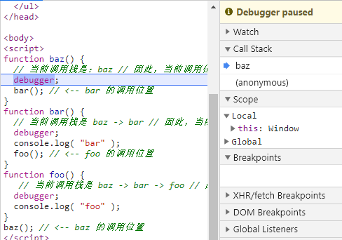
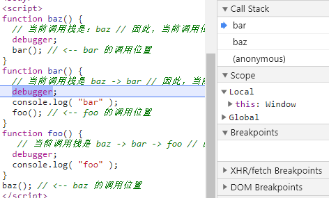
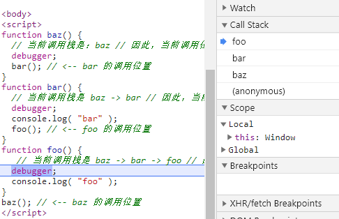

你不知道的JS系列-2
前言
本篇主要为阅读《你不知道的JavaScript-上卷》中遇到自己遗漏的知识点，加上一些自己的理解进行了梳理整理，阅读章节为第一部分：this和对象
关于this
this关键字是 JavaScript 中最复杂的机制之一, 在面向对象编程中，他是不可或缺的一份子。this到底是什么呢？不同于js中的词法作用域，this是一个很特别的存在:
this 在任何情况下都不指向函数的词法作用域
this 实际上是在函数被调用时发生的绑定，它指向什么完全取决于函数在哪里被调用!!!!
调用栈
利用chrome的调试工具，我们可以很清晰的看到函数的调用栈：
function baz() {
// 当前调用栈是：baz // 因此，当前调用位置是全局作用域
console.log( "baz" );
bar(); // <-- bar 的调用位置
}
function bar() {
// 当前调用栈是 baz -> bar // 因此，当前调用位置在 baz 中
console.log( "bar" );
foo(); // <-- foo 的调用位置
}
function foo() {
// 当前调用栈是 baz -> bar -> foo // 因此，当前调用位置在 bar 中
console.log( "foo" );
}
baz(); // <-- baz 的调用位置
栈中第二个元素，这就是真正的调用位置：



this 绑定规则
在函数的执行过程中如何确定 this 的绑定对象，有以下四条规则：
默认绑定
最常见的函数调用方式就是：独立调用；此时函数内的this指向全局对象（非严格模式下）
function foo(){
console.log(this.a)
}
var a=1
foo();// 1
隐式绑定
我们先看如下代码：
function foo() {
console.log( this.a );
}
var obj = {
a: 2,
foo: foo
};
obj.foo(); // 2
通过obj对象来调用函数，被调用函数被obj对象“拥有”了，这就是一种隐式绑定，并且对象属性引用链的最后一层才会影响this，在上面例子上，继续添加：
var obj2 = {
a:1,
obj:obj
}
obj2.obj.foo(); // 2
但隐式绑定经常出现this丢失的问题：
function foo() {
console.log( this.a );
}
var obj = {
a: 2,
foo: foo
};
var a="global";
var bar=obj.foo;
bar(); // global
setTimeout(obj.foo,1000) // global
this隐式丢失是非常常见的（在回调函数更是常见），此时需要我们进行显示绑定
显式绑定
此时，我们请出call函数与apply函数以及bind函数, call 与 apply 功能基本相同以call为例，先说下这两个函数，依旧沿用上面的例子
function foo() {
console.log( this.a );
}
var obj = {
a: 2,
foo: foo
};
var a="global";
var bar=obj.foo;
bar.call(obj); // 2
通过call可以强制将this指向obj对象，但对于回调函数，call/apply依旧无能为例，因为执行call/apply就相当于执行了函数，并没有返回新的函数，此时，就需要ES5中的bind函数登场了：
setTimeout(obj.foo.bind(obj),1000); // 2
JavaScript 语言和宿主环境中许多新的内置函数，都提供了一 个可选的参数，通常被称为“上下文”（context），其作用和 bind(..) 一样：
function foo() {
console.log( this.a );
}
var obj = {
a: 2,
foo: foo
};
var a="global";
[1].forEach(foo,obj);// 2
它们内部也是通过call/apply来进行了显示绑定
new绑定
首先要跳出一个误区：JS中没有构造函数，所谓的构造函数，其实只是对函数的“构造调用”。
用new调用过会自动执行以下操作：
- 创建（或者说构造）一个全新的对象。
- 这个新对象会被执行 [[ 原型 ]] 连接。
- 这个新对象会绑定到函数调用的 this。
- 如果函数没有返回其他对象，那么 new 表达式中的函数调用会自动返回这个新对象
我们接着看代码：
function foo(a){
this.a=a;
}
var bar=new foo(2);
console.log(bar.a) //2
this 绑定优先级
对于正常函数调用来说，函数绑定this的优先级如下：
new绑定 > 显式绑定 > 隐式绑定 > 用默认绑定
但，凡事总有例外:
如果你把 null 或者 undefined 作为 this 的绑定对象传入 call、apply 或者 bind时，此时会执行默认规则，如对参数进行柯里化（关于柯里化会单独开篇再讲）：
function add(a,b){
console.log("a:" + a + ", b:" + b);
}
add.apply(null,[2,3]);// a:2, b:3
但这样用null来忽略this的指向还是不够”安全”，我们可以通过创建空对象来实现：
function add(a,b){
console.log("a:" + a + ", b:" + b);
}
add.apply(Object.create( null ),[2,3]);// a:2, b:3
箭头函数
ES6中的箭头函数不适用四种标准规则，而是根据外层（函数或者全局）作用域来决定 this，箭头函数回归了词法作用域来替代this的机制
function foo() {
setTimeout(() => {
// 这里的 this 在此法上继承自 foo()
console.log(this.a); // 2
},100);
setTimeout(function(){
console.log(this.a);// global
},200);
}
var obj = {
a:2
};
var a = "global";
foo.call(obj);
对象
JavaScript 中一共有七种主要类型（术语是“语言类型”）: null/undefined/boolean/string/number/symbol/object,具体可参见重学前端系列-数据类型
前面六种称之为基本类型，剩下的都可以归到复杂类型下。同时JavaScript 中还有一些对象子类型，通常被称为内置对象：String/Number/Boolean/Object/Function/Array/Date/RegExp/Error/Set/Map/Promise, 更多关于对象部分可参见重学前端系列-对象
这些内置函数可以当作构造函数 （可以通过new调用）来使用，从而可以构造一个对应子类型的新对象。对于这些对象子类型，Object、Array、Function 和 RegExp（正则表达式）来说，无论使用文字形式还是构造形式，它们都是对象(不是字面量)，所以首选更简单的文字形式。建议只在需要那些额外选项时使用构造形式。
在对象中，属性名永远都是字符串（会被强制转化），数组中则是下标数字。
属性名
ES6之前属性名写法不支持变量，现在也开始支持了，主要场景是针对Symbol类型
var prefix = "foo";
var mySymbol=Symbol();
var myObject = {
[prefix + "bar"]:"hello",
[prefix + "baz"]: "world",
[mySymbol]:"Hello World"
};
console.log(myObject[mySymbol]) // Hello World
属性与方法
对于对象来说，如果改属性值指向的是一个函数，我们经常会称之为“方法”，但这其实是个误解，函数不管在什么情况下都不会属于某个对象，只是属性引用值指向一个函数而已，这在JS中经常混用，知道即可。“函数”和“方法”在 JavaScript 中是可以互换的。
数组
数组也是对象，所以也可以把数组当“普通”对象使用：
var arr=[1,2,3];
arr.type="array"
console.log(arr);// [1, 2, 3, type: "array"]
console.log(arr.length); //3
我们可以给数组添加属性，但数组的长度并不会改变
对象的复制
对于 JSON 安全的对象来说，有一种巧妙的复制方法(可以实现深度复制)：
var newObj = JSON.parse( JSON.stringify( someObj ) );
ES6 新增了 Object.assign方法来实现浅复制(内部也是通过遍历使用 = 操作符来赋值):
var newObj = Object.assign( {}, someObj )
对象的“其他”方法
Object.preventExtensions：禁止一个对象添加新属性并且保留已有属性var myObject = { a:2 }; Object.preventExtensions( myObject ); myObject.b = 3; myObject.b; // undefinedObject.seal：会创建一个“密封” 的对象（对对象所有属性调用preventExtensions方法，并把所有现有属性标记为configurable:false）Object.freeze：会创建一个冻结对象（对象上调用seal方法，并把所有“数据访问” 属性标记为writable:false）
Getter && Setter
此部分可参见重学前端系列-对象
存在性
for in操作符会检查属性是否在对象及其[[Prototype]]原型链中1. for in 其实只是检测属性名是否存在 2. 不要在数组中调用for in 因为会得到除了数值索引外其他的属性值： var arr=[1,2,3]; arr.type='8' for( var k in arr){ console.log(k);// 0,1,2,type }hasOwnProperty只会检查属性是否在当前对象中。1. 如果担心myObejct.hasOwnProperty失败可以调用：Object.prototype.myObejct.call(hasOwnProperty)propertyIsEnumerable:会检查给定的属性名是否直接存在于对象中（不包含原型链）并满足enumerable:trueObject.keys:会返回一个数组，包含所有可枚举属性;Object.getOwnPropertyNames:会返回一个数组，包含所有属性，无论它们是否可枚举
遍历
说起遍历首先想到的就是for循环，但for循环其实并不是在遍历值， 而是遍历下标来指向值， 如 myArray[i]
map：【不改变原数组】对数组中的每一项运行给定函数，返回每次函数调用的结果组成的数组
// 调用map时大多情况下是为了他的返回值的, 除了抛出异常以外，没有办法中止或跳出 const arr=[1,2,3]; const newArr=arr.map(v=>v*10); // 箭头函数只有一个返回值时可以省略return，其他情况不能省略，不然得到是[undefined,undefined,undefined] console.log(arr,newArr) // 结果：[1,2,3] [10,20,30]forEach：【不改变原数组】对数组中的每一项运行给定函数。这个方法没有返回值
// 调用map时大多情况下是只是为了遍历, 除了抛出异常以外，没有办法中止或跳出 const arr=[1,2,3]; const newArr=arr.map(v=>v*10); console.log(arr,newArr) // [1,2,3] undefinedfilter：【不改变原数组】对数组中的每一项运行给定函数，返回该函数会返回true 的项组成的数
const arr=[1,2,3]; const newArr=arr.filter(v=>v>2); console.log(arr,newArr) // [1,2,3] [3]every：【不改变原数组】对数组中的每一项运行给定函数，如果该函数对每一项都返回true，则返回true
// 只要给定函数返回false立即跳出，并得到false; const arr=[1,2,3]; const newArr=arr.every(v=>{ console.log(v);//1 return v>1 }); console.log(arr,newArr) ;//[1,2,3] falsesome：【不改变原数组】对数组中的每一项运行给定函数，如果该函数对任一项返回true，则返回true，跳出不再遍历
// 只要给定函数返回true立即跳出，并得到true; const arr=[1,2,3]; const newArr=arr.some(v=>{ console.log(v);//1,2 return v>1 }); console.log(arr,newArr) ;//[1,2,3] true
如何直接遍历值而不是数组下标（或者对象属性）？ ES6 增加了一种用来遍历数组的for of循环语法, 具体可参见ES6系列:Iterator
几种遍历的执行效率：
for > for-of > forEach > filter > map > for-in
ES6扩展了数组的方法，新增了entries/keys/values方法，返回的iterator对象用于for of循环，参见：ES6系列-新增类型与扩展方法